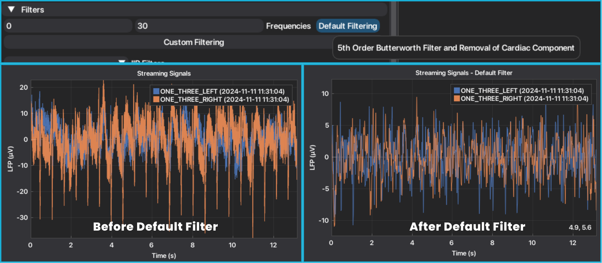
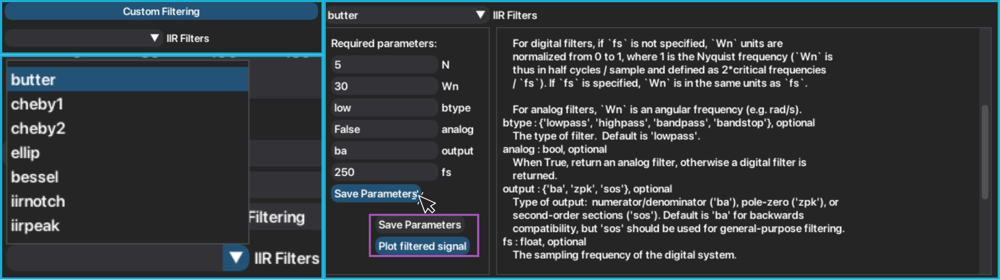
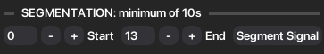
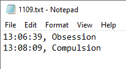
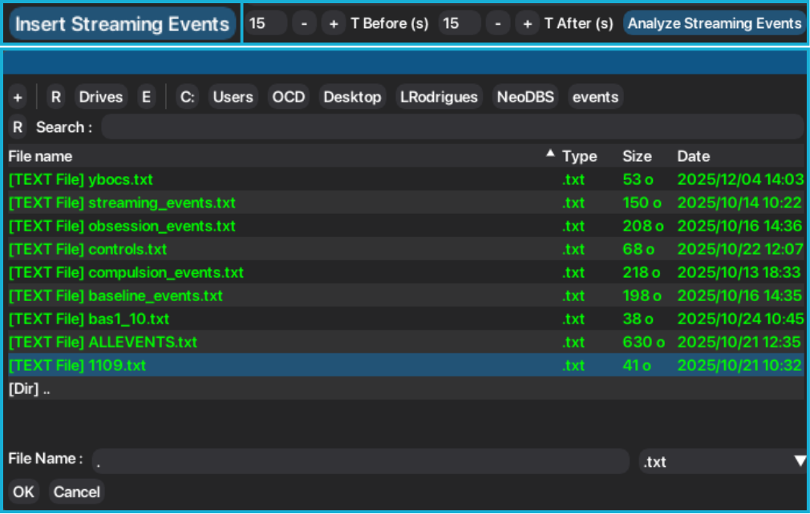
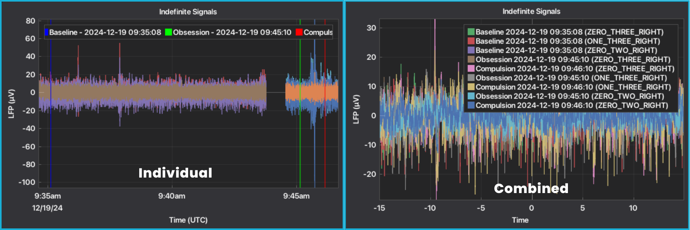
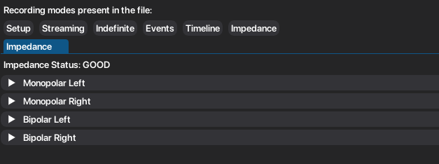
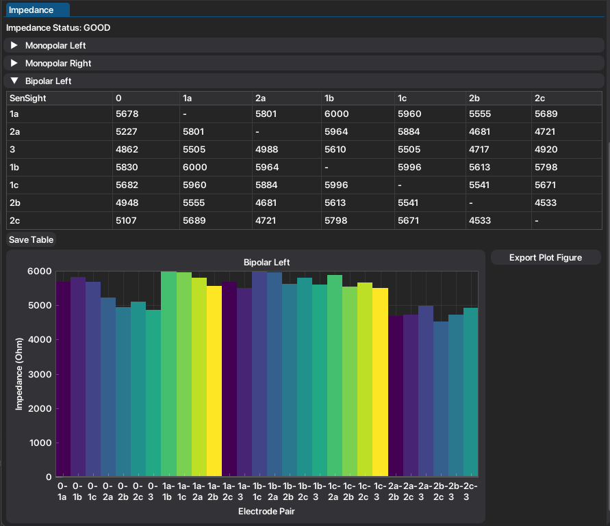

1. In-Clinic Data¶
In this tutorial, a simple workflow is given to perform the analysis of recordings saved in the time-domain (Streaming, Indefinite Streaming, Survey and Setup). After selecting the type of window and file(s) to be analyzed, you must choose the type of recording you want to analyze, which will open a tab with the respective plotted signals and functionalities, as described in First Usage.
Mode |
Usage Context |
Stimulation Status |
Key Features |
|---|---|---|---|
Setup |
In-clinic |
On or Off |
Artifact and Impedance check: stimulation ON/OFF Records each segment for 21s each (~90s duration) |
Survey |
In-clinic |
Off |
Artifact and Impedance check; Records each segment for 21s each (~90s duration) |
Survey Indefinite Streaming |
In-clinic |
Off |
Long-duration LFP recording from contact pairs (0-2, 0-3, 1-3), full-bandwidth (up to 125 Hz) |
Streaming |
In-clinic |
On or Off |
Long-duration LFP recording from contact pairs compatible with sti mulation. |
In the case of Setup and Survey modes, more than one tab will open since different types of acquisitions and data are stored in those modes.
- Setup mode tabs:
Setup ON: 21s of raw signals of segments/channels with stimulation ON;
Setup OFF: 21s of raw signals of segments/channels with stimulation OFF;
Setup ARTIFACTS: Medtronic's PSD estimation with artifact check.
- Survey mode tabs:
Survey: 21s of raw signals of segments/channels with stimulation OFF;
Survey PSD: Medtronic's PSD estimation and peak frequencies.
Note
NeoDBS works with a visibility approach, meaning selected methods will only be applied to the signals selected on the main plot of the respective tab. If the signal is not selected (represented on the main plot), the methods will NOT be applied. This ensures full customization and independency of the data analysis.
1.1. Preprocessing¶
Typically, the first step in any data analysis pipeline is "cleaning" the data to remove undesired noise or signals. NeoDBS offers a variety of filters, and pipelines, that are customizable to the user needs.
Warning
After applying any preprocessing method (filtering, segmentation or event-marking/epoch) you will not have access to the raw original signals without losing your progress, as the main plot of the tab will be replaced with the preprocessed signals. If you want to restore the original signals, the user must close and reopen the respective tab.
1.1.1. Default Filter¶
For more non-experienced users, NeoDBS offers a Default Filter that removes cardiac component and maintains only the desired frequencies, selected in the respective input spaces. This method was adapted from UF BRAVO's Platform (https://github.com/Fixel-Institute/BRAVO). This filter performs a 5th order Butterworth Bandpass filter with cardiac artifact removal.
Select the interval of frequencies you want to keep in the signal.
Press "Default Filtering".
The main plot will be updated with the filtered signals.

1.1.2. Custom Filters¶
For users that require specific filtering parameters, NeoDBS also presents 7 different infinite impulse response (IIR) filters.
Press "Custom Filtering" to show the available filters.
Select the type of filter you want apply. The required parameters and the method documentation will appear to guide you in filling in the parameters. Parameters are set to default values, but can be adjusted. Parameters that are associated to signal acquiring configurations are hard-coded (ex.: sampling frequency, 250 Hz).
After completing the parameters, press "Save Parameters".
If you are sure you want to apply the filter, press "Plot filtered signal".
The main plot will be updated with the filtered signals.

1.2. Segmentation¶
Recordings can be segmented, with a minimum of 10 seconds of duration.
Select the start and end of the segment.
Press "Segment Signal".
The main plot will be updated with the segmented signals.

1.3. Event-locked Analysis¶
NeoDBS offers the possibility of analyzing in-clinic events that were recorded during the recording session. The user can either mark or segment the in-clinic events by uploading a .txt file with the described in-clinic events. This a functionality made to improve analyzing in-clinic tasks, such as protocols.
If working with the Individual window, NeoDBS will mark the in-clinic events in the main plot of the recordings. If working with the Combined window, NeoDBS will segment the in-clinic events, replacing the raw signals. The user can also select the duration of the segment.
To load the platform with the events, the user must select a .txt file with the described in-clinic events. The .txt file must be with ONE of the following structures:
HH:MM:SS, name of event
HH:MM, name of event
DD/MM/YYYY HH:MM:SS, name of event
DD/MM/YYYY HH:MM, name of event

Press "Insert Streaming Events", in the Individual Window, or "Analyze Streaming Events", in Combined Window, after selecting the interval prior and after the event.
Select .txt file with the described events.
The marked events or event-locked segments, will appear or replace, respectively, the main plot of the tab.
The time axis will convert from seconds to datetime format. If the signals are not visible, click two times on the plot to re-center.

In the Individual Window, events can be inserted several times. In the Combined Window, after an event-locked segmentation has been emplyed, no more segmentation or events can be added.

1.4. Impedance¶
If during the recording session any impedance test was performed, either with Setup or Survey modes, the impedance values can be accessed in an independent tab.
Press "Impedance" to open the impedance tab.
The tab is organized by type of impedance tests: Monopolar or Bipolar, and hemispheres.

Click on each header to display the table with the impedance values and the plot of the respective values.

Both table and plot can easily be exported by the respective buttons.
1.5. Signal Analysis¶
Tutorials to apply analysis methods can be found in the Signal Analysis page.